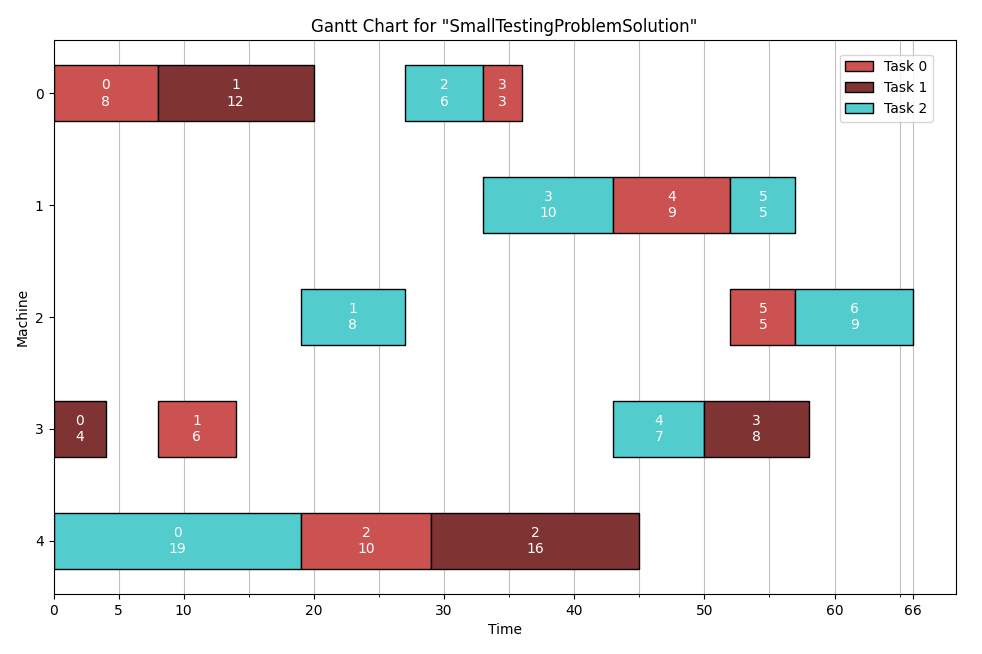

JS Lib Documentation
Background
This repository is part of a project for the course "Optimization Methods for Engineers" (227-0707-00L) at ETH Zurich. The goal of the project is to implement an optimizer for a chosen problem and write a report about the results.
The problem is Job Shop scheduling, where a set of N tasks need to be scheduled on M machines. Each tasks consist of subtasks that have a processing order, varying processing times and need to be processed on a specific machine. A machine can only process a single subtask at a time and subtasks are non-preemptable.
A mathematical description of the problem is contained in the report.
The goal is to compare the results of different Simulated Annealing implementations. In particular, I will examine how different (random) step procedures and search space representations affect the quality of the results.
Documentation Credit
This documentation uses styles and javascript taken from the Google Style Guides for C++.
Components Overview
The JS_Optimizer solution consists of three projects. They are two libraries (JS_Lib and loguru) and the entry point JS_Optimizer.
JS Optimizer
The main function is the entry point of the project. It contains three functions besides main:
- a small sanity test function to verify that the project is setup correctly
- the 'runOptimizer' template function that shows how to create a Problem and Optimizer and then run the Optimizer. It also shows how to validate and store the Solution. The configuration needs to be done manually.
- the 'evaluateOptimizers' function that uses the StatsCollector utility class to run and log an optimizer on many problems in bulk.
JS Lib
The optimization code is completely contained in the JS_Lib project.
It manages the loading and saving of Problems and Solutions. It provides the base classes for the different optimizers. The details are in the JS Lib section below
Loguru
For the logging needs of the project the logging library "loguru" by emilk is used. See the github repository.
Version 2.1.0 cloned in April 2023 is included/setup in this repository. Refer to it's documentation for usage details.
Other Dependencies
The project uses CMake to setup the Visual Studio solution, hence it requries both CMake and Visual Studio.
There are a couple optional helper scripts that require a Python installation (see Python Helper Scripts).
JS Lib
JS Problem Code
Solutions
Problems
Tasks
JS Optimizers
All Optimizer's subclass one of the optimizer_base classes. The different Representation classes implement some common funcionality that a given search space representation may need.
Thsese classes are not meant to be subclassed.
Usually the main functionality that they provide is the implementation of a constructor for the Solution class.
JS Optimizer Base
These classes are meant to be subclassed.
Machine Order representation

Global Order representation

Graph representation

JS Utility
File Formats
Problems and Solutions are stored and read from text files. There are three file formats, two for Poblems and one for Solutions. The required formats are detailed in the next sections
Problem Description
A Job Shop problem consists of Tasks, a Task consists of Steps, a single Step runs on a specific machine and takes a set amount of time.
This project supports two formats, called Standard and Detailed. For custom problems the Detailed format is recommended because it allows for more consistency checks during parsing.
The Standard format was introduced to be compatible with the format used for the public JobShop Instances that were/are researched and have known optima.
Detailed Format
The format to define a problem in the Detailed format is as follows:
- The first line contains two numbers: 'task count' and 'machine count', they specify how many tasks and how many machines the problem contains
- Every line afterwards defines exactly one task. This is done by first specifying the number of Steps the Task has. Then each Step is specified by a pair that defines the 'machine' and 'duration' of the Step. The sequence of the steps on a line defines the order in which the Steps need to be prcessed.
For the Step defintions to be legal 'machine' has to be in the range [0,machine_count] and 'duration' must be >= 0. All values must be integers. The number of tasks must also match the number of tasks that was specified.
The comma can be replaced by any character or removed altogether.
During parsing the first continous block of lines starting with '#' will be ignored as comments.
# comment lines are possible, no identation allowed before '#' 3 5 6, 0 8, 3 6, 4 10, 0 3, 1 9, 2 5 4, 3 4, 0 12, 4 16, 3 8 7, 4 19, 2 8, 0 6, 1 10, 3 7, 1 5, 2 9
Standard Format
The format to define a problem in the Standard format is as follows:
- The first line contains three numbers: 'task count' and 'machine count' and 'lower bound', they specify how many tasks and how many machines the problem contains as well as the known optimal lower bound
- Every line afterwards defines exactly one task. This is done by giving a pair for each Step is specified by a pair that defines the 'machine' and 'duration' of the Step. The sequence of the steps on a line defines the order in which the Steps need to be prcessed.
For the Step defintions to be legal 'machine' has to be in the range [0,machine_count] and 'duration' must be >= 0. All values must be integers.
Any white-space separator works, including multiple ones. The Problems in the Instances folder use tabs.
the abz5 problem
10 10 1234 4 88 8 68 6 94 5 99 1 67 2 89 9 77 7 99 0 86 3 92 5 72 3 50 6 69 4 75 2 94 8 66 0 92 1 82 7 94 9 63 9 83 8 61 0 83 1 65 6 64 5 85 7 78 4 85 2 55 3 77 7 94 2 68 1 61 4 99 3 54 6 75 5 66 0 76 9 63 8 67 3 69 4 88 9 82 8 95 0 99 2 67 6 95 5 68 7 67 1 86 1 99 4 81 5 64 6 66 8 80 2 80 7 69 9 62 3 79 0 88 7 50 1 86 4 97 3 96 0 95 8 97 2 66 5 99 6 52 9 71 4 98 6 73 3 82 2 51 1 71 5 94 7 85 0 62 8 95 9 79 0 94 6 71 3 81 7 85 1 66 2 90 4 76 5 58 8 93 9 97 3 50 0 59 1 82 8 67 7 56 9 96 6 58 4 81 5 59 2 96
Solution Description
Solutions have one format. The Python visualizations scripts that create Gnatt Charts depended on this to parse Solutons, in particular the comma separator is mandatory.
The format to define a problem in the Standard format is as follows:
- The first line is the name of the Solution. This is accessible if the Solution is loaded in the C++ program and it will be displayed in the Python visualizations.
- The second line contains two numbers: 'task count' and 'machine count', they specify how many tasks and how many machines the Solution contains
- Every line afterwards corresponds to a machine. The first number is the number of Steps the Machine processes. After that there is a six-tuple for each Step. The tuples are separated by commas and have the format: 'task id' 'step index' 'machine' 'duration' 'start time' 'end time'
The Steps and Tasks that can be reconstructed from the Solution must match the Problem it should solve. This can be checked with the Solution::validateSolution() function for arbitrary pairs of Solutions and Problems.
During parsing the first continous block of lines starting with '#' will be ignored as comments.
SmallTestingProblemSolution 3 5 4, 0 0 0 8 0 8, 1 1 0 12 8 20, 2 2 0 6 27 33, 0 3 0 3 33 36 3, 2 3 1 10 33 43, 0 4 1 9 43 52, 2 5 1 5 52 57 3, 2 1 2 8 19 27, 0 5 2 5 52 57, 2 6 2 9 57 66 4, 1 0 3 4 0 4, 0 1 3 6 8 14, 2 4 3 7 43 50, 1 3 3 8 50 58 3, 2 0 4 19 0 19, 0 2 4 10 19 29, 1 2 4 16 29 45
This is a Solution for the example given in the Detailed Format
Using the Python Script to create a Gnatt Chart for this Solution:
Python Helper Scripts
The helper scripts are located in the 'PythonScripts' Folder at the root of the project. The two main scripts are "createGnattFromFile.py" and "Google_OR_Tools.py".
Create Gnatt Visualization
Creates a visualization of a Solution using Matplotlib. Example usage:
$ python createGanttFromFile.py -ri dmu/dmu06.txt
Use the '-h' or '-help' flag to get the complete information about the usage.
For very large Solutions the chart may struggle to display all the labels in a readable manner.
Google OR Tools
This is a simple wrapper for the Google OR-Tools that can solve JobShop problems with a CP-Solver. It requires the installation of the ORTools module (see OR-Tools Install and follow the python guide).
The wrapper enforces a TIMEOUT constraint. Example usage:
$ python Google_OR_Tools.py -ri dmu/dmu06.txt -t 20
Use the '-h' or '-help' flag to get the complete information about the usage.
Additionally there is also the 'runOR_Tools.py' script. It runs 'Google_OR_Tools.py' on multiple files.
'runOR_Tools.py' does not take any arguments, instead the code should be edited directly. Especiall the python version must be set correctly as it currently uses an alias to a custom install location.